Luis Cross
Compite en motocross con un solo brazo. Su contenido llega mucho más lejos que su cuenta.
visualizaciones de su cuenta en febrero de 2026, su mes pico
seguidores en Instagram
reproducciones de los 3 reels de febrero
engagement de sus reels en febrero
Por qué una marca lo elegiría
Piloto de motocross de Cañar que entrena y compite al más alto nivel con un solo brazo. Su audiencia no viene por los tiempos de vuelta: viene por la historia. Cuando le preguntan si siente miedo, responde que sí.
- 2025Debut en la primera válida del MX Challenge, compitiendo en casa
- 2025–2026Temporada con Factory Bike
- 2026Activaciones con concesionarios y marcas de equipamiento
Lo que construimos juntos
Cobertura en tiempo real, activaciones con marcas, arte gráfico y resúmenes de carrera. Solo piezas creadas en colaboración con Pro Motion.
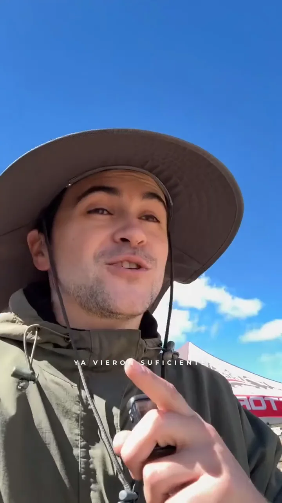
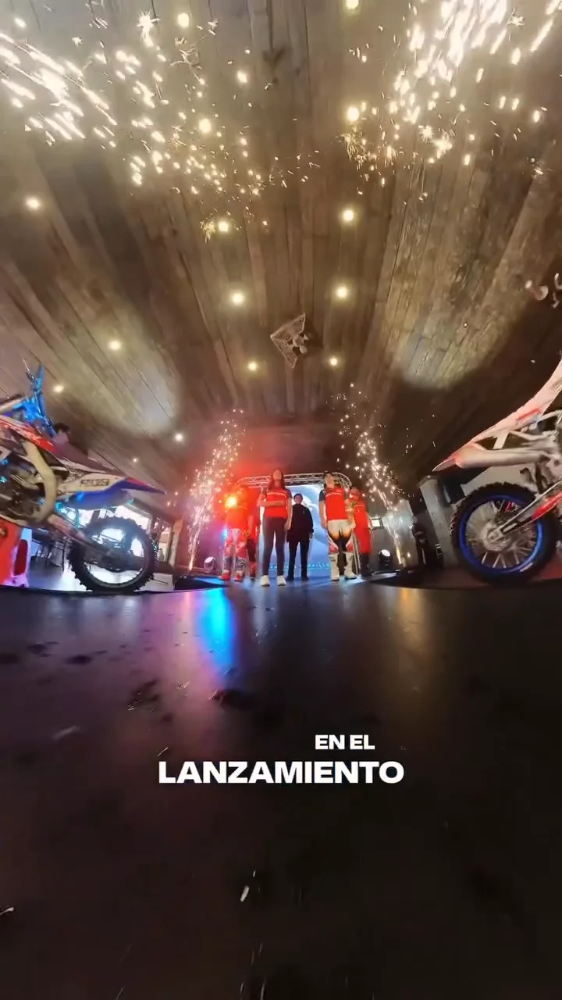
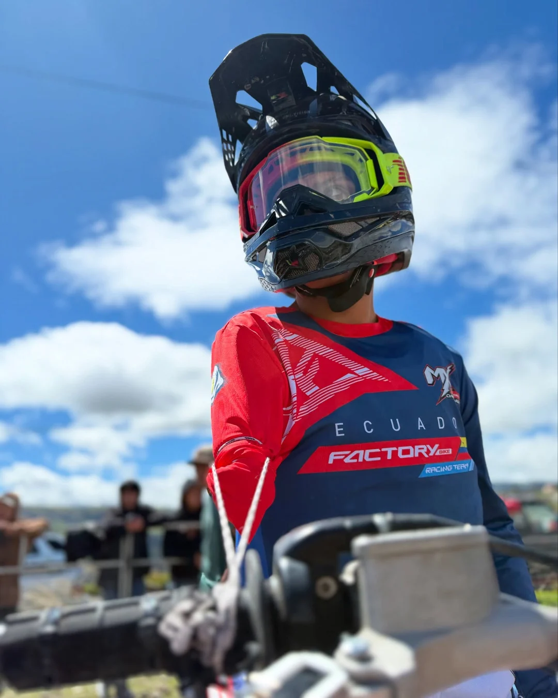
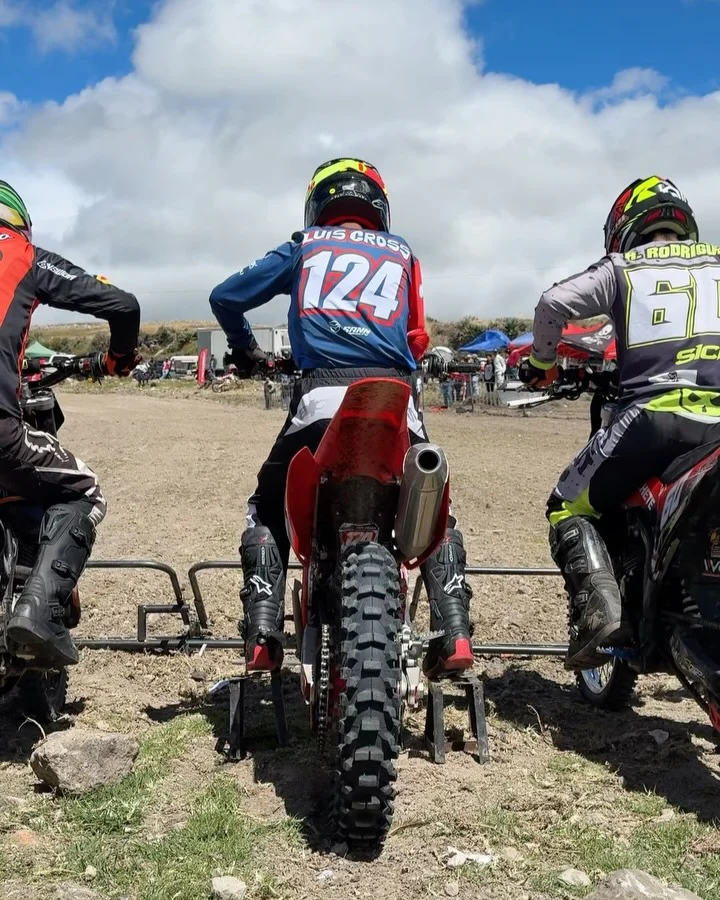
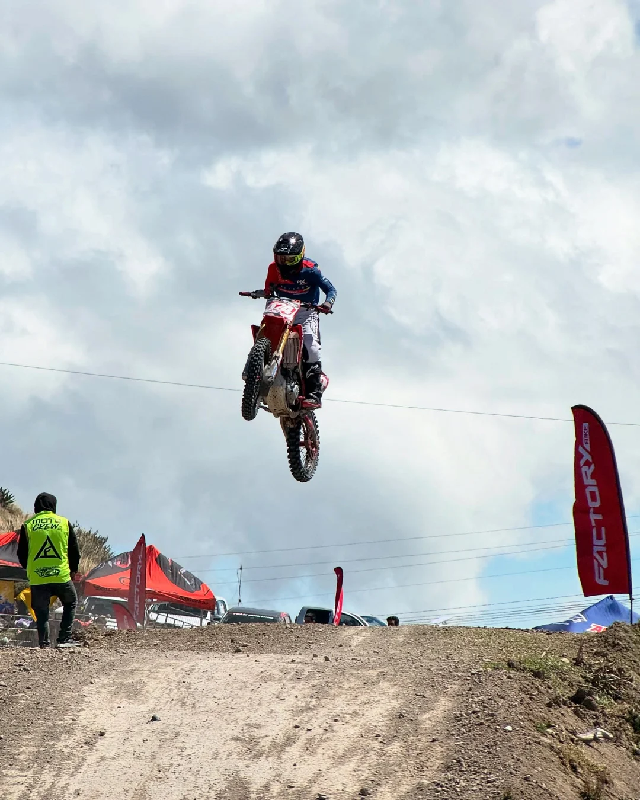
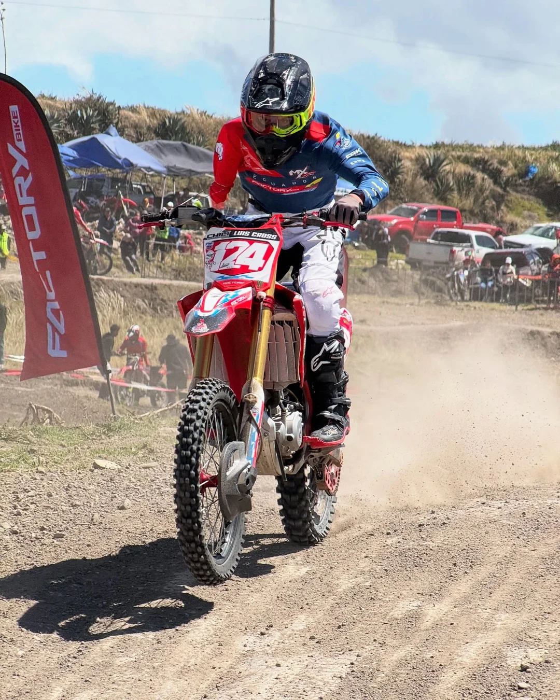
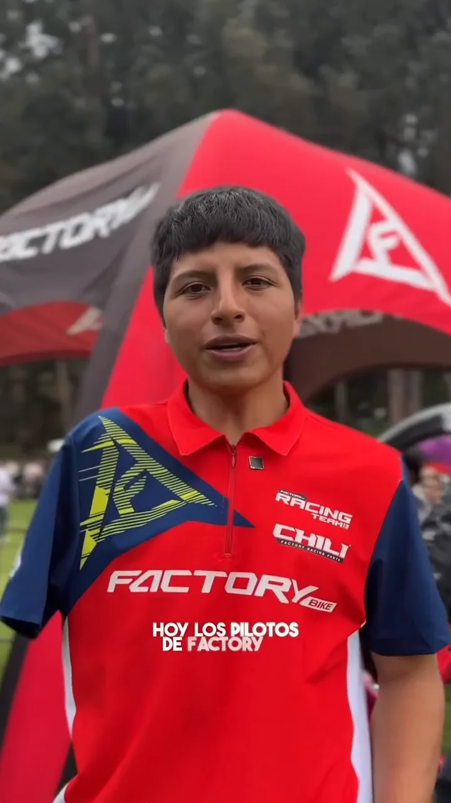
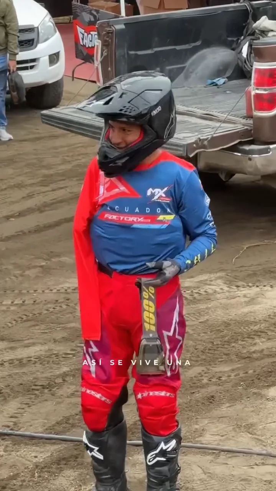
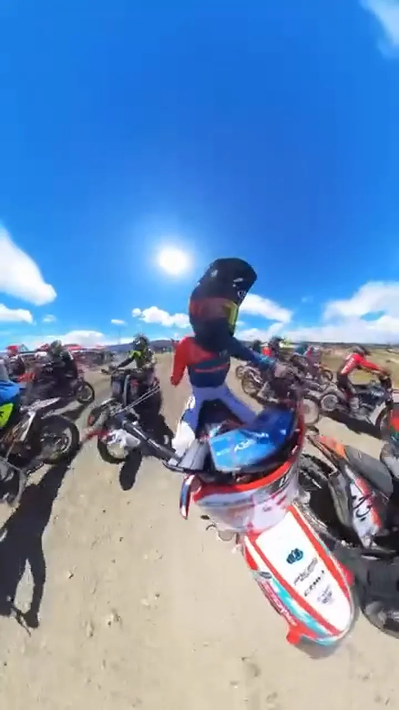
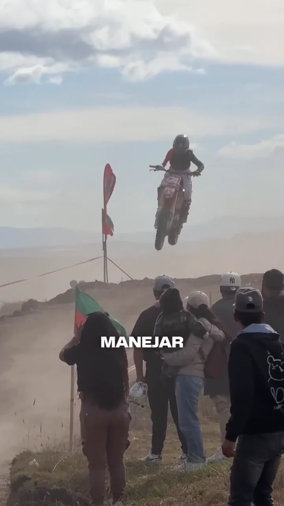
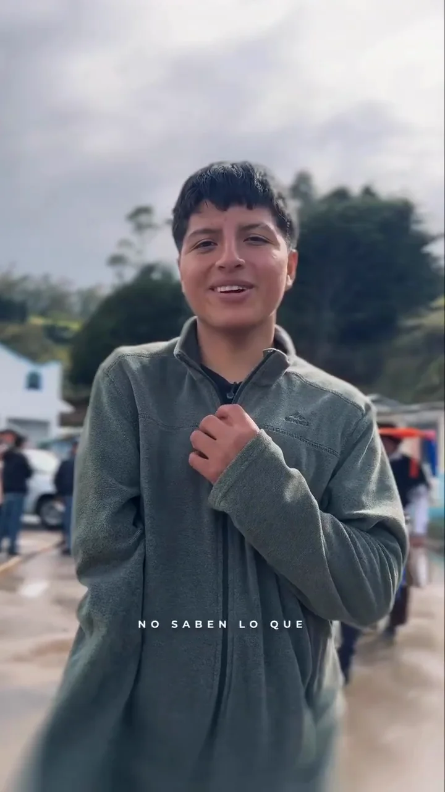
Datos de Instagram al 21 de octubre de 2026 · @pro_motion.ec
Quién lo sigue
73 % hombres · 18 % mujeres. En febrero de 2026 su cuenta multiplicó por cinco sus visualizaciones frente a enero. Datos de Metricool.
¿Qué marca encaja con Luis?
Toca un sector para ver una idea de activación basada en lo que su contenido ya demuestra.
Elige un sector.


Ficha tentativa elaborada por Pro Motion Sport Marketing con datos públicos de Instagram (octubre de 2026) y la auditoría ProMatch del 17 de agosto de 2026. Los logros marcados como “declarado” fueron entregados por el deportista o su equipo. El puntaje ProMatch mide la preparación comercial observada en el contenido, no la probabilidad de conseguir un auspicio, y no implica un acuerdo comercial vigente.
Diseñemos una activación con Luis
Recibe una propuesta de activación con entregables, calendario y rango de inversión.